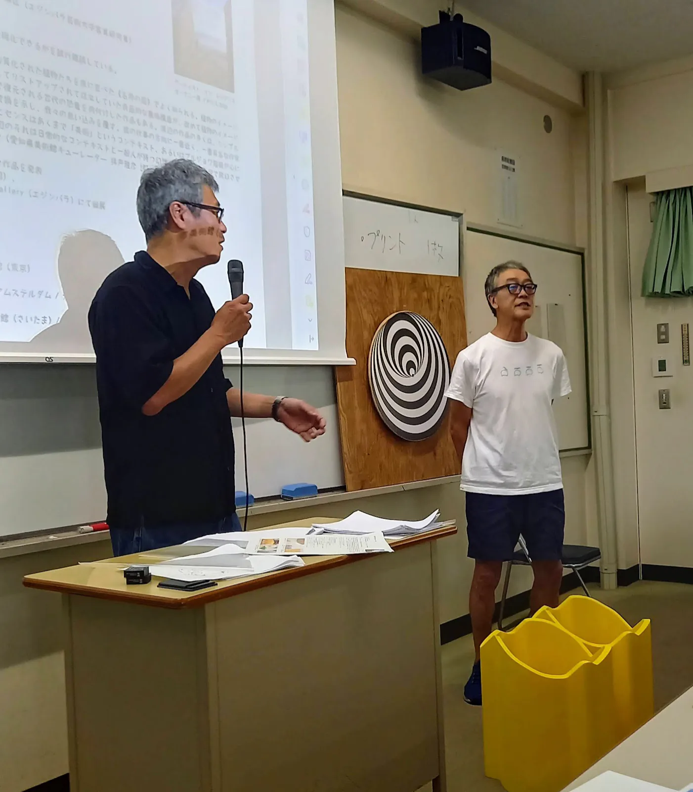
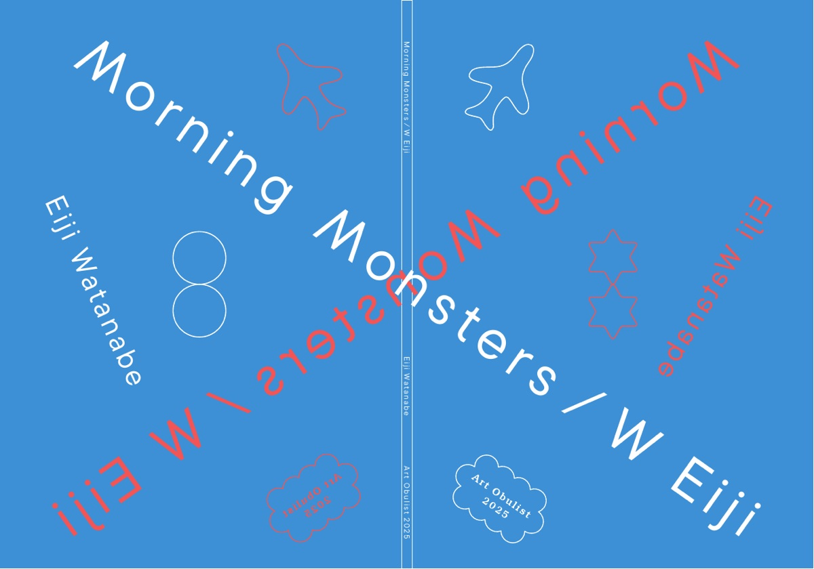

Newsニュース
The exhibition was chapter one. The two Eiji Watanabes have, in the words of the exhibition report, “entered yet a new stage.” Newest first.
The two Eijis lecture together at Aichi University of Education
A record of the summer intensive course at Aichi University of Education, where Eiji Watanabe and Eiji Watanabe took the stage side by side.

The two Eijis lecture together at Aichi University of Education, summer intensive course, 2026.8.20Photo courtesy of Art Obulist Executive Committee Three videos. The first was released on August 17.
Video of the artist talk “We Two are Tacticians” released
The full talk (1:25:14) can be watched on the official Art Obulist YouTube channel.
A5, 100 pages, fully bilingual. The neuroscientist’s chapter is read from the front, the artist’s from the back, and the two meet in the middle. Edited by Satsuki Yamamoto and Emi Hirano.

The front and back covers of the catalogueDesign: Naoko Mizota counter lecture vol.02 “Analyze W Eiji”
A lecture by the physicist Masaki Watabe at Jingu339 (Jingu, Atsuta-ku, Nagoya), 16:30–18:00. The flyer carries a hand-drawn Müller-Lyer illusion. The content of the lecture is on the Analyze W Eiji website.
The Eiji Watanabe exhibition “Morning Monsters / W Eiji” has closed, with the largest attendance in the history of Art Obulist. On the final day, the discussion “Skim off the scum” (Eiji Watanabe vs Masahiko Haito).
Artist talk “We Two are Tacticians” held
Eiji Watanabe (artist) and Eiji Watanabe (neuroscientist) talked in the Rest Building, moderated by Satsuki Yamamoto. About 50 people attended.
The exhibition opened in the Management Building, the Rest Building and the courtyard of Okura Park (with an opening ceremony the day before, October 31). The exhibition ran at Okura Park from November 1 to December 7, 2025.

Opening ceremony, 2025.10.31Photo: Kenji Aoki